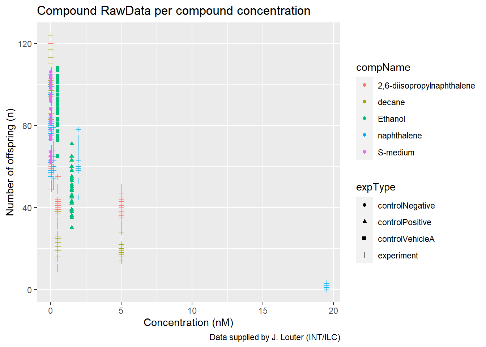
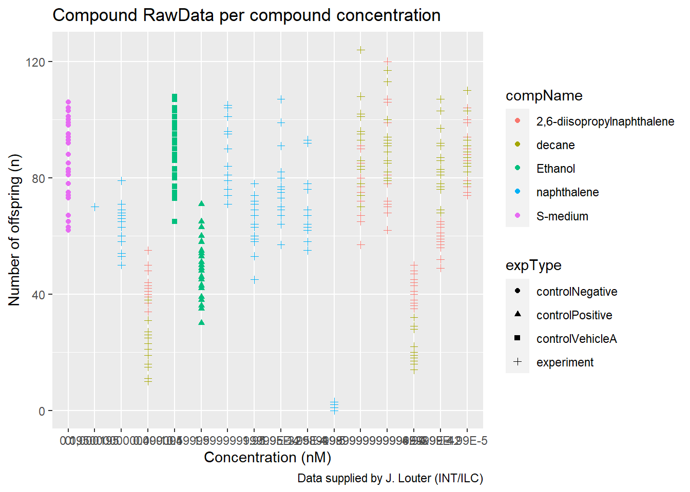
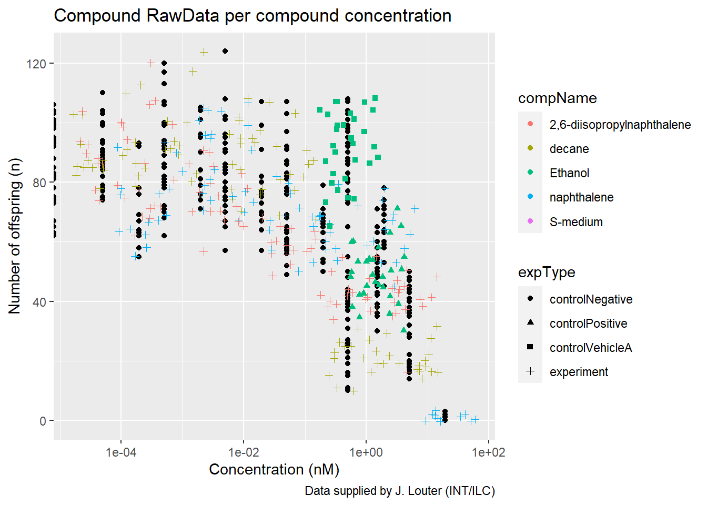
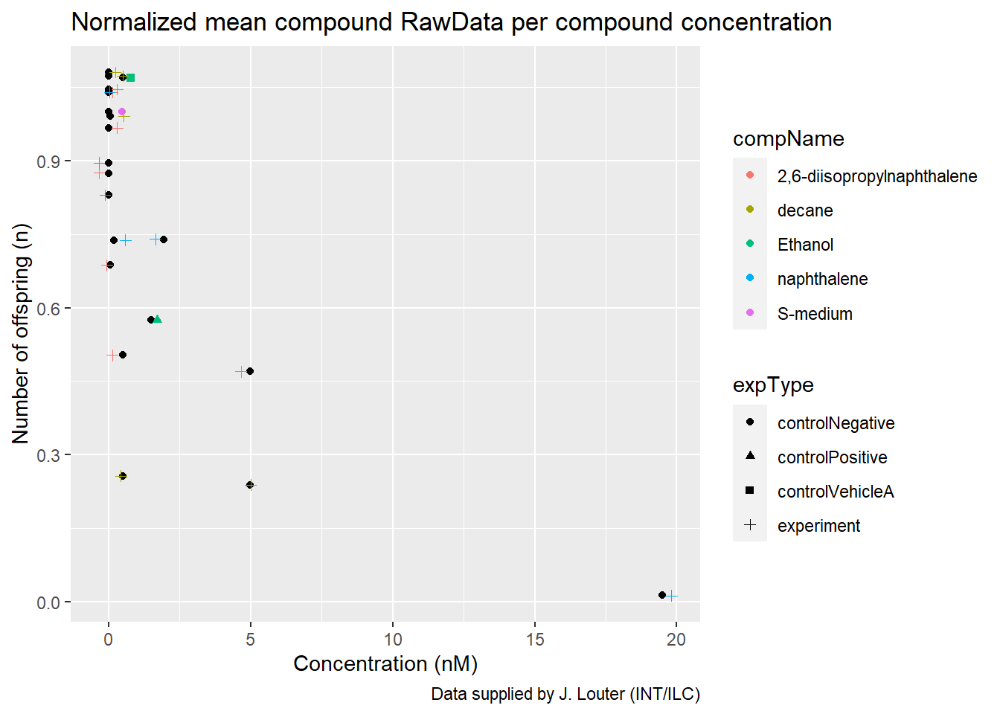

2 C. elegans plate experiment
The data for this exercise was kindly supplied by J. Louter (INT/ILC) and was derived from an experiment in which adult C.elegans nematodes were exposed to varying concentrations of different compounds. The variables RawData (the outcome - number of offspring counted as an integer value, after incubation time), compName (the generic name of the compound/chemical), the compConcentration (the concentration of the compound), and the expType are the most important variables in this dataset.
A typical analysis with this data would be to run a dose-response analysis using a log-logistic model with estimates for the maximal, the minimal, the IC50 concentration and the slope at IC50. We will not go into the details but a good package to run such computations and create graphs in R is the {drc} package.
Image 1 illustrates the excel file containing the data.
 Image 1: Raw data file containing data about the C. elegans plate experiment.
Image 1: Raw data file containing data about the C. elegans plate experiment.
The file contains four sheets which have had lots of care put into the make-up and are somewhat difficult to read as they are now.
To have a look at the first five rows of the file the data is retrieved through the following R-code:
# Read the excel file into a vector and display it in a small table.
scatter_FLOW.062 <- read_excel('data/data_raw/001_c_elegans_plate_exp/CE.LIQ.FLOW.062_Tidydata.xlsx')
knitr::kable(scatter_FLOW.062 %>% head(5))| plateRow | plateColumn | vialNr | dropCode | expType | expReplicate | expName | expDate | expResearcher | expTime | expUnit | expVolumeCounted | RawData | compCASRN | compName | compConcentration | compUnit | compDelivery | compVehicle | elegansStrain | elegansInput | bacterialStrain | bacterialTreatment | bacterialOD600 | bacterialConcX | bacterialVolume | bacterialVolUnit | incubationVial | incubationVolume | incubationUnit | incubationMethod | incubationRPM | bubble | incubateTemperature |
|---|---|---|---|---|---|---|---|---|---|---|---|---|---|---|---|---|---|---|---|---|---|---|---|---|---|---|---|---|---|---|---|---|---|
| NA | NA | 1 | a | experiment | 3 | CE.LIQ.FLOW.062 | 2020-11-30 | Sergio Reijnders - Ellis Herder | 68 | hour | 50 | 44 | 24157-81-1 | 2,6-diisopropylnaphthalene | 4.99 | nM | Liquid | controlVehicleA | N2 | 25 | OP50 | heated | 0.743 | 8 | 300 | ul | 1,5 glass vial | 1000 | ul | rockroll | 35 | NA | 20 |
| NA | NA | 1 | b | experiment | 3 | CE.LIQ.FLOW.062 | 2020-11-30 | Sergio Reijnders - Ellis Herder | 68 | hour | 50 | 37 | 24157-81-1 | 2,6-diisopropylnaphthalene | 4.99 | nM | Liquid | controlVehicleA | N2 | 25 | OP50 | heated | 0.743 | 8 | 300 | ul | 1,5 glass vial | 1000 | ul | rockroll | 35 | NA | 20 |
| NA | NA | 1 | c | experiment | 3 | CE.LIQ.FLOW.062 | 2020-11-30 | Sergio Reijnders - Ellis Herder | 68 | hour | 50 | 45 | 24157-81-1 | 2,6-diisopropylnaphthalene | 4.99 | nM | Liquid | controlVehicleA | N2 | 25 | OP50 | heated | 0.743 | 8 | 300 | ul | 1,5 glass vial | 1000 | ul | rockroll | 35 | NA | 20 |
| NA | NA | 1 | d | experiment | 3 | CE.LIQ.FLOW.062 | 2020-11-30 | Sergio Reijnders - Ellis Herder | 68 | hour | 50 | 47 | 24157-81-1 | 2,6-diisopropylnaphthalene | 4.99 | nM | Liquid | controlVehicleA | N2 | 25 | OP50 | heated | 0.743 | 8 | 300 | ul | 1,5 glass vial | 1000 | ul | rockroll | 35 | NA | 20 |
| NA | NA | 1 | e | experiment | 3 | CE.LIQ.FLOW.062 | 2020-11-30 | Sergio Reijnders - Ellis Herder | 68 | hour | 50 | 41 | 24157-81-1 | 2,6-diisopropylnaphthalene | 4.99 | nM | Liquid | controlVehicleA | N2 | 25 | OP50 | heated | 0.743 | 8 | 300 | ul | 1,5 glass vial | 1000 | ul | rockroll | 35 | NA | 20 |
And the data types of the variables RawData, compName and compConcentration:
# Display the data type of select columns
scatter_FLOW.062 %>% select(RawData, compName, compConcentration) %>% head(1)## # A tibble: 1 x 3
## RawData compName compConcentration
## <dbl> <chr> <chr>
## 1 44 2,6-diisopropylnaphthalene 4.99It would be expected that the data types of the columns are dbl, chr and dbl. compConcentration however, has the datatype chr. This means the format was imported incorrectly making it difficult to analyse the data.
The following code transforms the comConcentration column to dbl and plots the data in a scatterplot graph with the data for the different compounds on the y-axis (RawData) and the varying concentrations on the x-axis (compConcentration). Each variable has a colour matching the compName and a symbol matching the expType column-values.
# Transform the datatype of compConcentration to dbl
scatter_FLOW.062 <- scatter_FLOW.062 %>% transform(compConcentration = as.double(compConcentration))
# Plotting data using ggplot
scatter_FLOW.062 %>% ggplot(aes(x = compConcentration, y = RawData)) +
geom_point(aes(colour = compName, shape = expType)) +
labs(title = "Compound RawData per compound concentration",
caption = "Data supplied by J. Louter (INT/ILC)") +
xlab("Concentration (nM)") +
ylab("Number of offspring (n)")
Figure 1: Scatterplot displaying the amount of offspring at different concentrations in nM per compound (colour) and experiment type (symbol).
Had the data type of the compConcentration column not been changed the following would have happened:
# Show example of the wrong graph from unedited .xlsx format by retrieving data
wrong_scatter_FLOW.062 <- read_excel('data/data_raw/001_c_elegans_plate_exp/CE.LIQ.FLOW.062_Tidydata.xlsx')
# Plotting data using ggplot
wrong_scatter_FLOW.062 %>% ggplot(aes(x = compConcentration, y = RawData)) +
geom_point(aes(colour = compName, shape = expType)) +
labs(title = "Compound RawData per compound concentration",
caption = "Data supplied by J. Louter (INT/ILC)") +
xlab("Concentration (nM)") +
ylab("Number of offspring (n)")
Figure 2: Scatterplot displaying the amount of offspring at different concentrations in nM per compound (colour) and experiment type (symbol) with the compConcentration column unchanged.
Every concentration is seen as a separate point because the compConcentration column has the ‘chr’ type.
The ‘correct’ graph in figure 1 still has to be cleaned up more. This was done by using a log10 transformation on the x-axis to create a more clear graph and by adding jitter to prevent the points in the graph from overlapping:
# Plot data using log10 function in ggplot
scatter_FLOW.062 %>% ggplot(aes(x = compConcentration, y = RawData)) +
geom_point() +
geom_jitter(aes(colour = compName, shape = expType), width = 0.5) +
scale_x_log10() +
labs(title = "Compound RawData per compound concentration",
caption = "Data supplied by J. Louter (INT/ILC)") +
xlab("Concentration (nM)") +
ylab("Number of offspring (n)")
Figure 3: Scatterplot displaying the amount of offspring at different concentrations in nM per compound (colour) and experiment type (symbol) transformed with log10 on the x-axis and added jitter.
The positive control for this experiments is ethanol. The negative control for this experiment is S-medium.
Analyzing this experiment to learn whether there is indeed an effect of different concentrations of compounds on offspring count and whether the different compounds have a different curve (IC50) would take these steps:
(Not performed here)
- Group the data for every compound.
- Check if the data is normally distributed.
- Use the appropriate statistical tests on the data to see if there is a statistically significant effect of different concentrations on the offspring count.
- Calculate the IC50 and create a plot of the curve.
In the next visualization the data has been normalized for the ‘controlNegative’ in such a way that the mean value for controlNegative is exactly equal to 1 and that all other values are expressed as a fraction thereof.
# Calculate the mean of the RawData
mean_data_FLOW.062 <- scatter_FLOW.062 %>%
select(expType, RawData, compName, compConcentration) %>%
group_by(expType) %>%
filter(expType == 'controlNegative') %>%
summarise(mean_RawData = mean(RawData, na.rm = TRUE))
# Normalise the RawData using the calculated mean
normalized_FLOW.062 <- scatter_FLOW.062 %>%
select(expType, compName, compConcentration, RawData) %>%
mutate(RawData_normalized = RawData / mean_data_FLOW.062$mean_RawData)
# Calculate the mean of the normalised data
mean_normalized_FLOW.062 <- normalized_FLOW.062 %>% group_by(expType, compName, compConcentration) %>%
summarise(mean_RawData_normalized = mean(RawData_normalized, na.rm = TRUE))
knitr::kable(mean_normalized_FLOW.062 %>% head(5))| expType | compName | compConcentration | mean_RawData_normalized |
|---|---|---|---|
| controlNegative | S-medium | 0.00e+00 | 1.0000000 |
| controlPositive | Ethanol | 1.50e+00 | 0.5750873 |
| controlVehicleA | Ethanol | 5.00e-01 | 1.0690726 |
| experiment | 2,6-diisopropylnaphthalene | 4.99e-05 | 1.0391929 |
| experiment | 2,6-diisopropylnaphthalene | 4.99e-04 | 0.9670159 |
# Plot the normalised mean using ggplot
mean_normalized_FLOW.062 %>% ggplot(aes(x = compConcentration, y = mean_RawData_normalized)) +
geom_point() +
geom_jitter(aes(colour = compName, shape = expType), width = 0.5) +
labs(title = "Normalized mean compound RawData per compound concentration",
caption = "Data supplied by J. Louter (INT/ILC)") +
xlab("Concentration (nM)") +
ylab("Number of offspring (n)")
Figure 4: Scatterplot displaying the amount of offspring at different concentrations in nM per compound (colour) and experiment type (symbol) normalized on the negative control.
This step was taken to get the result in relation to the ‘0 value’ which makes it easier to compare the samples to the “normal” value.